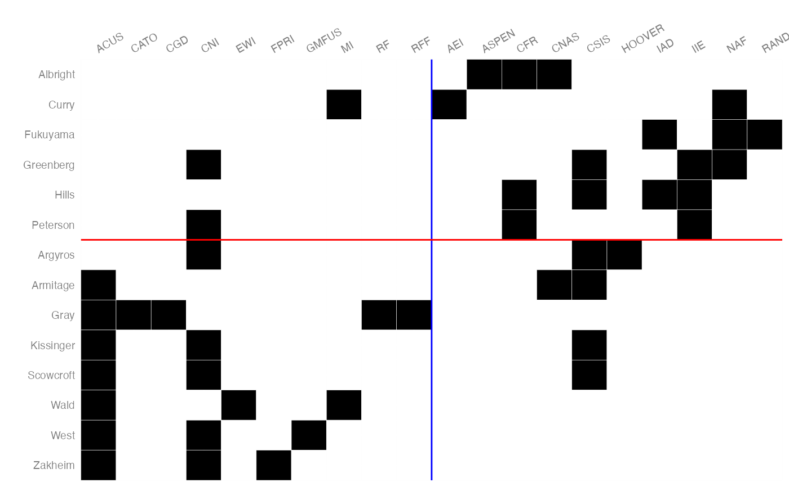
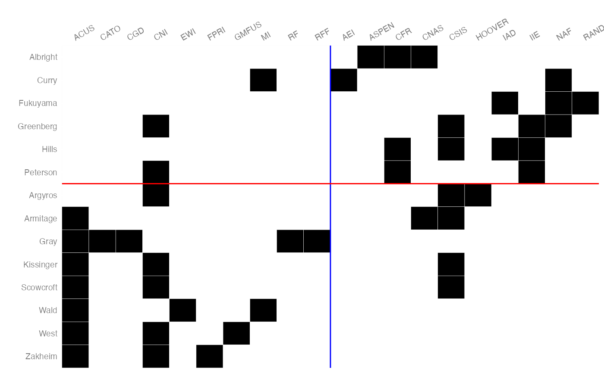

Blockmodelling
blockmodel(object, clusters)
blockmodel_concor(
object,
p = 1,
cutoff = 0.999,
max.iter = 25,
block.content = "density"
)
# S3 method for block_model
print(x, ...)
reduce_graph(blockmodel, block_labels = NULL)
summarise_statistics(node_measure, clusters = NULL, sumFUN = mean)Arguments
- object
A migraph-consistent object (matrix, igraph, tidygraph).
- clusters
the vector of cluster membership for the blockmodel
- p
An integer representing the desired number of partitions.
- cutoff
A value between 0 and 1 used to determine convergence.
- max.iter
An integer representing the maximum number of iterations.
- block.content
A string indicating which method to use for calculating block content. Options are: "density", "sum", "meanrowsum", "meancolsum", "median", "min", "max".
- x
An object of class "block_model"
- ...
Additional arguments passed to generic print method
- blockmodel
a blockmodel object
- block_labels
A character vector manually providing labels for the blocks in the blockmodel
- node_measure
A vector or matrix of node-level statistics, such as centrality measures or a census.
- sumFUN
A function by which the values should be aggregated or summarised. By default
mean.
References
Breiger, R.L., Boorman, S.A., and Arabie, P. 1975. An Algorithm for Clustering Relational Data with Applications to Social Network Analysis and Comparison with Multidimensional Scaling. Journal of Mathematical Psychology, 12: 328--383.
Examples
mex_concor <- blockmodel_concor(mpn_elite_mex)
mex_concor
#>
#> Network Blockmodel:
#>
#> Block membership:
#>
#> Trevino Madero Carranza Aguilar
#> 1 1 1 1
#> Obregon Calles Aleman Gonzalez Portes Gil
#> 1 1 1 1
#> Cardenas Avila Camacho Beteta Jara
#> 1 1 1 1
#> Beteta Serra Rojas Ruiz Galindo Bustamante
#> 1 2 2 2
#> Loyo Carvajal Ruiz Cortines Carrillo Flores
#> 2 2 2 2
#> Ortiz Mena Gonzalez Blanco Salinas Lozano Lopez Mateos
#> 2 2 2 2
#> Margain Diaz Ordaz Beteta Echeverria Alvarez
#> 2 2 2 2
#> Aleman Valdes Lopez Portillo Cardenas Sanchez Taboada
#> 1 2 2 1
#> De la Madrid Salinas de Gortari Aleman Velasco
#> 2 2 2
#>
#> Reduced form blockmodel:
#>
#>
#> [,1] [,2]
#> [1,] 0.30222222 0.07666667
#> [2,] 0.07666667 0.30000000
plot(mex_concor)
#> Warning: The `.data` argument of `add_column()` must have unique names as of tibble 3.0.0.
#> Use `.name_repair = "minimal"`.
#> This warning is displayed once every 8 hours.
#> Call `lifecycle::last_lifecycle_warnings()` to see where this warning was generated.
#> Warning: Removed 809 rows containing missing values (geom_tile).
 usa_concor <- blockmodel_concor(mpn_elite_usa_advice)
usa_concor
#>
#> Network Blockmodel:
#>
#> Block membership:
#>
#> First nodeset:
#>
#> Albright Greenberg Hills Argyros Armitage Kissinger Curry Fukuyama
#> 1 2 2 1 1 2 1 1
#> Peterson Gray Scowcroft Wald West Zakheim
#> 2 1 2 2 2 2
#>
#> Second nodeset:
#>
#> ACUS FPRI GMFUS AEI HOOVER ASPEN IAD CATO IIE CFR CGD
#> 1 2 2 1 2 1 2 1 2 1 1
#> CNAS MI NAF RAND CNI RF RFF CSIS EWI
#> 1 2 2 2 1 2 2 1 1
#>
#> Reduced form blockmodel:
#>
#>
#> [,1] [,2]
#> [1,] 0.05 0.2833333
#> [2,] 0.25 0.0750000
plot(usa_concor)

summarise_statistics(node_degree(mpn_elite_mex),
cutree(cluster_structural_equivalence(mpn_elite_mex), 3))
#> 1 2 3
#> 6.222222 6.631579 7.428571
summarise_statistics(node_triad_census(mpn_elite_mex),
cutree(cluster_structural_equivalence(mpn_elite_mex), 3))
#> 003 012 102 201 210 300
#> 1 480.0000 0 72.11111 6.333333 0 2.555556
#> 2 520.1579 0 37.57895 2.105263 0 1.157895
#> 3 543.1429 0 17.85714 0.000000 0 0.000000
usa_concor <- blockmodel_concor(mpn_elite_usa_advice)
usa_concor
#>
#> Network Blockmodel:
#>
#> Block membership:
#>
#> First nodeset:
#>
#> Albright Greenberg Hills Argyros Armitage Kissinger Curry Fukuyama
#> 1 2 2 1 1 2 1 1
#> Peterson Gray Scowcroft Wald West Zakheim
#> 2 1 2 2 2 2
#>
#> Second nodeset:
#>
#> ACUS FPRI GMFUS AEI HOOVER ASPEN IAD CATO IIE CFR CGD
#> 1 2 2 1 2 1 2 1 2 1 1
#> CNAS MI NAF RAND CNI RF RFF CSIS EWI
#> 1 2 2 2 1 2 2 1 1
#>
#> Reduced form blockmodel:
#>
#>
#> [,1] [,2]
#> [1,] 0.05 0.2833333
#> [2,] 0.25 0.0750000
plot(usa_concor)

summarise_statistics(node_degree(mpn_elite_mex),
cutree(cluster_structural_equivalence(mpn_elite_mex), 3))
#> 1 2 3
#> 6.222222 6.631579 7.428571
summarise_statistics(node_triad_census(mpn_elite_mex),
cutree(cluster_structural_equivalence(mpn_elite_mex), 3))
#> 003 012 102 201 210 300
#> 1 480.0000 0 72.11111 6.333333 0 2.555556
#> 2 520.1579 0 37.57895 2.105263 0 1.157895
#> 3 543.1429 0 17.85714 0.000000 0 0.000000